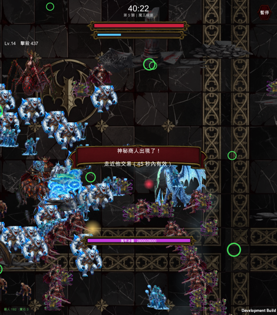

魔王城堡實機

你要的是「這些敵人的攻擊動畫也要補手繪」。查完程式碼之後結論不一樣了——大部分敵人的攻擊在 Unity 版根本沒有實作，不是視覺陽春的問題。
| 技能 | 誰有 | 狀態 | 畫面上實際是什麼 |
|---|---|---|---|
| ring 環爆 | 魔龍、深淵之眼、蜘蛛后…共 6 隻 | 程序化視覺 | 粉紅色圓環閃一下 → 0.5 秒後再閃一次並判傷。有預警設計，但就是兩個圓環 |
| aimed 瞄準射擊 | 碎骨暴龍、毒沼魔蜥…共 6 隻 | 程序化視覺 | 一顆紅色純色圓點直線飛過來 |
| dash 衝刺 | 魔龍、碎骨暴龍…共 5 隻 | 沒有任何視覺 | 魔王突然變快朝你衝，沒有起手動作、沒有殘影、沒有預警 |
| summon 召喚 | 深淵之眼、蜘蛛后…共 5 隻 | 沒有任何視覺 | 三隻小怪憑空出現在魔王腳邊，沒有法陣、沒有出現特效 |
| 能力 | 資料裡有的敵人 | 狀態 | 說明 |
|---|---|---|---|
| Ranged 遠程 | 咒術南瓜、毒蛇、冰女巫、死靈巫師、地獄弓手、混沌魔炮 | 完全沒實作 | 資料裡有射程/冷卻/彈速/傷害/散射，程式裡只有一處讀它——決定敵人的備用外觀畫成環形。牠們從來不開火 |
| GroundAoe 地面法術 | 沼澤薩滿、混沌術士 | 完全沒實作 | 全專案零引用。這兩隻應該會在地上放延遲爆的法陣，現在只會走過來撞你 |
| Explode 自爆 | 自爆魔 | 完全沒實作 | 同樣只用來決定備用外觀（三角形）。牠不會爆，只是一隻跑很快的雜魚 |
| Instant 秒殺 | 死神 | 完全沒實作 | 零引用。資料上傷害 999、應該碰到就死，現在只是一般接觸傷害 |
| NoKnockback 免疫擊退 | 死神、岩石巨人、黑騎士、石像鬼 | 完全沒實作 | 零引用 |
| 血月獵殺者 | 第 2 關機制怪 | 符合設計 | 設計上就是純追擊、接觸傷害，沒有遠程攻擊。有走路動畫，這隻沒問題 |
這些能力在 Expo 版全部都有實作（ranged 12 處引用、explode 13 處、groundAoe 7 處、instant 6 處、noKnockback 4 處）。Unity 版把資料表整張搬過來了，但行為邏輯沒跟著搬——跟先前抓到的天使雕像、霜痕靴、幸運草、星殞噴濺是同一類移植漏洞，只是這次規模大得多。
如果先做美術，等於為「不存在的攻擊」畫特效——素材做完也接不上呼叫點。
魔王城堡也上線了，五關的實機驗證：森林 34/40、荒原 35/40、沼澤 35/40、冰原 37/40、城堡 39/40（穿越率，太低＝變成牆，100%＝碰撞沒作用）。
